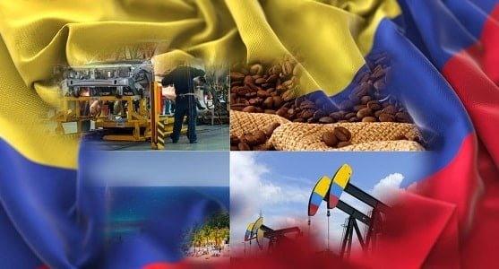

Básicamente, la economía colombiana se fundamenta en la producción de bienes primarios para la exportación y productos para el consumo del mercado interno, siendo la actividad con mayor tradición, la siembra del café, cuyo proceso se lleva a cabo en varias regiones del país, resaltando el Eje Cafetero constituido por los departamentos de Caldas, Risaralda, Valle del Cauca y Tolima.
